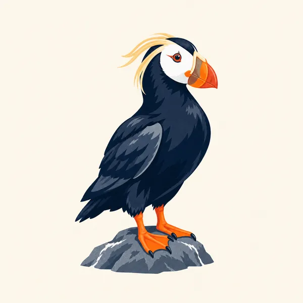
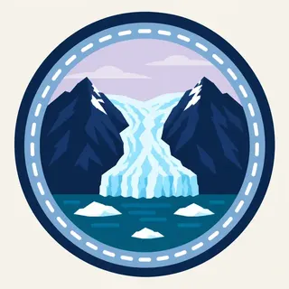

01
Harding Icefield
About 700 square miles of snow and ice, by the park's 2025 fact sheet, feeding nearly 40 outflowing glaciers. It is the largest icefield entirely within the United States.
TrailMark Archive Edition
Alaska | Kenai Peninsula
A monument on December 1, 1978, for the icefield and the coast it feeds. A national park on December 2, 1980.
Archive No. TM-KEFJ-046
National Park since 1980
Collection Harding Icefield
Park Overview
President Jimmy Carter proclaimed Kenai Fjords National Monument on December 1, 1978. ANILCA made it a national park on December 2, 1980.
The 2025 fact sheet puts the park at 669,983 acres, almost all of it, 649,219 acres, designated wilderness. The park sits on the edge of the Kenai Peninsula in southcentral Alaska, reached from Seward.
The Harding Icefield is the park's core feature, a field of snow and ice the fact sheet gives as roughly 700 square miles, the largest icefield entirely within the United States. Over 30 tidewater and piedmont glaciers flow from it, feeding fjords the Park Service calls remote, rugged, and unpredictable.
Emotional Thesis
Exit Glacier is the one you can walk to; the road ends near it and a trail climbs beside its retreat. The rest of the park's ice reaches the sea by boat only, calving into fjords where the water itself is glacial blue-green with rock flour.
The header painting sets a tidewater glacier under dark, ice-carved peaks, forest holding the lower slopes where the ice has already pulled back. That retreat is not scenery. NPS names it directly: the region demonstrates active climate change through shrinking glaciers.
Landscape Highlights
01
About 700 square miles of snow and ice, by the park's 2025 fact sheet, feeding nearly 40 outflowing glaciers. It is the largest icefield entirely within the United States.
02
Over 30 tidewater and piedmont glaciers descend from the icefield to the coast. Where ice meets salt water, calving sends blocks into the fjord below.
03
Glaciers carved the fjords themselves. Sea otters, seals, sea lions, and seabirds work the coastline the ice left behind.
Wildlife
The park names orcas, humpback whales, seals, sea lions, mountain goats, and sea otters among the animals of the fjords and their edges. The extra drawing is a tufted puffin, one of the seabirds the coastline supports.

01
Marine wildlife concentrates where the fjords meet open water. Most of it is seen from a boat, not a trail.
02
Mountain goats work the cliffs above the ice. The park's terrain does the sorting between marine and alpine species.
03
The puffin in the extra drawing is the archive's image of the seabird coast, not a census of what nests there.
Geology
The Harding Icefield is the geology here: snow that never fully melts, compacting into ice that flows downhill under its own weight and out to sea as glaciers.
01
Nearly 40 glaciers are named as flowing from the icefield on the park's overview page. The fact sheet counts more than 30 of them as tidewater or piedmont glaciers reaching the coast.
02
Calving ice at a tidewater face is the icefield meeting the ocean directly. The fjords themselves were cut by ice that has since retreated.
03
Do not treat the icefield as static. NPS describes shrinking glaciers as the visible sign of a warming climate at this park.
The main season for boat tours into the fjords and for the Exit Glacier trail. Wildlife-viewing and calving are both weather-dependent.
Boat access narrows as weather turns. The icefield above does not change with the calendar the way the coast does.
Exit Glacier Road is not plowed for cars in winter; the area shifts to ski and snowshoe access. Check NPS before planning a winter visit.
Snow lingers into the season at elevation. The fjords open back up to boats as conditions allow.
Photography
A glacier alone in a photo could be anywhere cold. The fjord under it, and the scale a boat or a person provides, is what places this park.
01
A kayak, a boat, or a person in the frame tells the viewer how large the ice face actually is.
02
At Exit Glacier, a marker post and the current ice edge together tell the real story better than the ice alone.
03
Glacier Bay's ice faces are its own park's subject. Here, the icefield above the glacier is what makes this coast particular.
Field Notes
The ice reaches the water and keeps going, in pieces, and the fjord takes what it is given.
TrailMark Field Notes

Badge Story
The badge fails if it could be any snowy mountain. A calving ice wall meeting dark water is the specific picture.
Cool blues and whites, the tidewater glacier's own palette.
Water at the base, not just ice and rock. The coast is the point.
No brown bear here. That animal belongs to Katmai and Lake Clark.
Archive No.046
LocationKenai Peninsula
ReleaseIcefield Mark
Stewardship / Safety
Most of the park has no road. Boat tours and permits are how visitors reach the fjords; conditions change with weather and season.
Keep distance from tidewater glacier faces. Calving ice and the wave it creates are unpredictable.
Marine wildlife viewing follows NPS distance guidance. A boat captain's approach is not a guarantee of a closer view being safe.
Exit Glacier Road access and trail conditions shift with the season. Confirm current status with NPS before a visit.
The retreat of the ice is an ongoing, monitored change, not a fixed backdrop. What a photograph from a decade ago shows may not match the glacier today.
Current conditions, fees, and alerts are on the National Park Service site.
Continue the Archive
Glacier Bay's bay was solid ice within living memory. Kenai Fjords keeps the Harding Icefield, still feeding more than 30 glaciers to a fjord coast. Lake Clark, in this batch, is the volcano side of the same Alaska coastline.